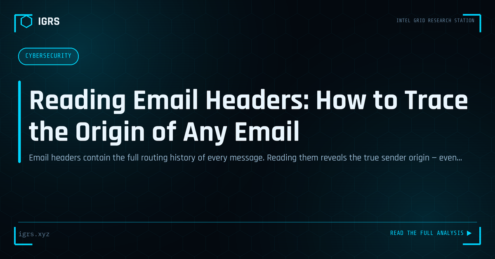

Reading Email Headers: How to Trace the Origin of Any Email
| File No. | IGRS-033/2026 |
| Subject | Step-by-step guide to email header analysis for origin tracing and phishing investigation |
| Category | OSINT Fundamentals |
| Author | Manuj Kumar Pandey |
| Published | 2026-05-29 |
| Reading time | 12 minutes |
Email headers contain the full routing history of every message. Reading them reveals the true sender origin — even when the displayed address is forged.
Email Headers: The Hidden Map of Every Message
Every email carries hidden headers that record its complete journey from sender to recipient. To the untrained eye they are incomprehensible technical noise, but to an investigator they are a detailed map revealing the true origin, path, and authenticity of a message. Email header analysis is a foundational skill for investigating phishing, fraud, harassment, and impersonation. This guide explains how to read and analyse email headers.
Why Email Headers Matter
The visible parts of an email — sender name, subject, body — are trivially forged. The headers, however, record the technical reality of how the message travelled. They reveal the actual originating server, the path taken, authentication results, and timing. When the visible "From" says one thing but the headers say another, the headers tell the truth.
Accessing Email Headers
| Client | How to View Headers |
|---|---|
| Gmail | Three dots menu, "Show original" |
| Outlook | File, Properties, Internet headers |
| Apple Mail | View, Message, All Headers |
| Yahoo | More, View raw message |
Key Header Fields
The critical fields for investigation are:
- Received: The chain of mail servers, read bottom to top — the bottom is the origin
- Return-Path: Where bounces go, often the real sender domain
- X-Originating-IP: The sender's IP address
- Authentication-Results: SPF, DKIM, DMARC outcomes
- Reply-To: Where replies go, often different in phishing
- Message-ID: Unique identifier for the message
Reading the Received Chain
The Received headers form a chain documenting each server the email passed through. Crucially, they are read from bottom to top — the bottommost Received line typically shows the originating server, while the top shows the final delivery. Tracing this chain reveals the true path of the email and, importantly, the originating IP address that begins the investigation.
Finding the True Origin IP
Identifying the real source IP is the core goal. It appears in the X-Originating-IP field or the earliest Received line. Once obtained, this IP is investigated across VirusTotal, AbuseIPDB, IPInfo, and Shodan to determine its reputation, geolocation, and the hosting infrastructure. This transforms an anonymous email into a traceable origin.
Understanding Authentication Results
| Mechanism | What It Verifies |
|---|---|
| SPF | Sending server is authorised for the domain |
| DKIM | Message was not tampered with in transit |
| DMARC | Policy alignment and enforcement |
Failures in these mechanisms — visible in the Authentication-Results header — strongly indicate spoofing. A legitimate email from a properly configured domain passes all three; a spoofed phishing email typically fails one or more.
Detecting Spoofing and Forgery
Email header analysis exposes spoofing through several signals: a mismatch between the displayed From and the Return-Path, a Reply-To address different from the From, SPF/DKIM/DMARC failures, an originating IP inconsistent with the claimed sender, and suspicious server hops in the Received chain. Together these reveal when an email is not what it claims to be.
Investigating Header Manipulation
Sophisticated attackers may attempt to forge headers, but the receiving mail server's own Received entries cannot be forged by the sender — they are added by trusted infrastructure. This means the later Received lines (added by the recipient's mail system) are reliable, while earlier ones claimed by the sender should be treated with suspicion. Understanding which parts of the header chain are trustworthy is key to accurate analysis.
Headers in Email-Based Crime Investigation
Email header analysis applies across many investigations: phishing (tracing the origin), BEC fraud (detecting spoofed executive emails), harassment (identifying anonymous senders), and extortion. The originating IP leads to the ISP, where legal process under Section 94 BNSS can identify the subscriber. The headers thus form the first link in a chain from an anonymous email to an identified suspect.
Tools for Header Analysis
While headers can be read manually, tools accelerate analysis: online header analysers parse and visualise the chain, MXToolbox examines email infrastructure, and IP reputation services contextualise the origin. However, understanding the underlying header structure remains essential — tools assist analysis but do not replace the investigator's judgement in interpreting what the headers reveal.
Preserving Email Evidence
For email evidence to be admissible, the complete email with full headers must be preserved — not just the visible message or a screenshot. The full source, saved and hashed, with a Section 63 BSA certificate, constitutes proper evidence. Email header analysis combined with sound preservation turns a suspicious message into both an investigative lead and court-admissible evidence, making it one of the most practical and frequently applied skills in the cybercrime investigator's repertoire.